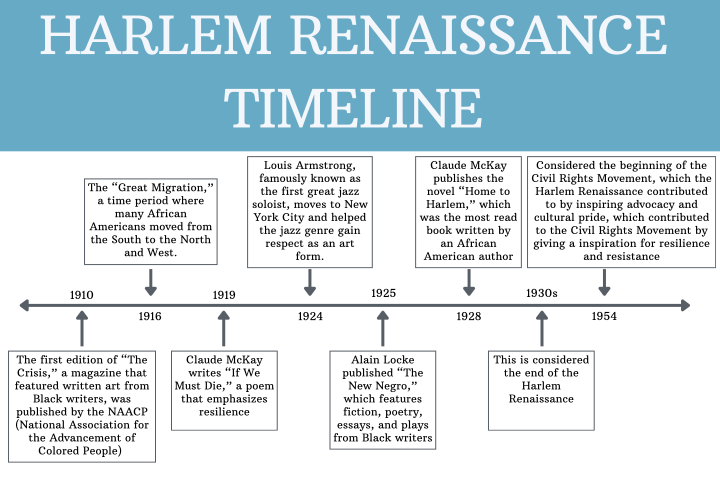

"Joy in the Woods" by Claude McKay - Analysis
The Great Migration caused more than just people moving: It actually sparked an explosion of African American art, music, and writing. One famous poem, “Joy in the Woods,” was written in 1920 by Claude McKay. This poem uses antithesis to compare the joy of nature with the repetitive task that is living each day feeling like your only purpose is to go to work. McKay begins the poem with “There is joy in the woods just now, the leaves are whispers of song, and the birds make mirth on the bough and music the whole day long” uses imagery to paint a picture for the writer of the simple joys of nature. This sets the scene for the author to then compare work to nature. “For every day I must eat, and find ugly clothes to wear, and bad shoes to hurt my feet, and a shelter for work-drugged sleep!” contrasts the peacefulness of nature with the requirements of everyday life and work. This emphasizes how different they are. “Joy in the Woods” is a great example of a poem from a Black writer during the Harlem Renaissance.